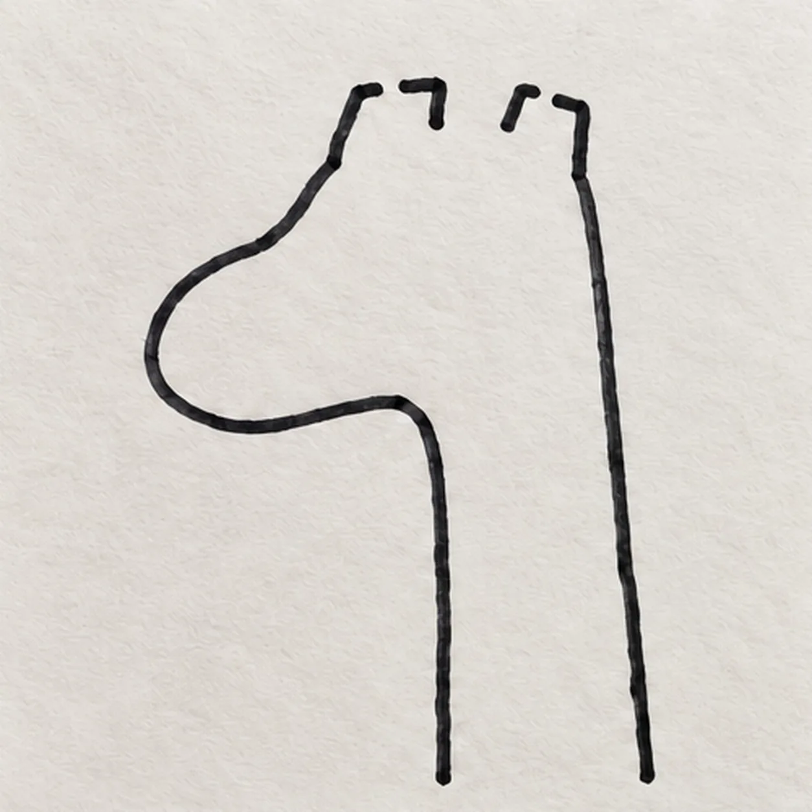
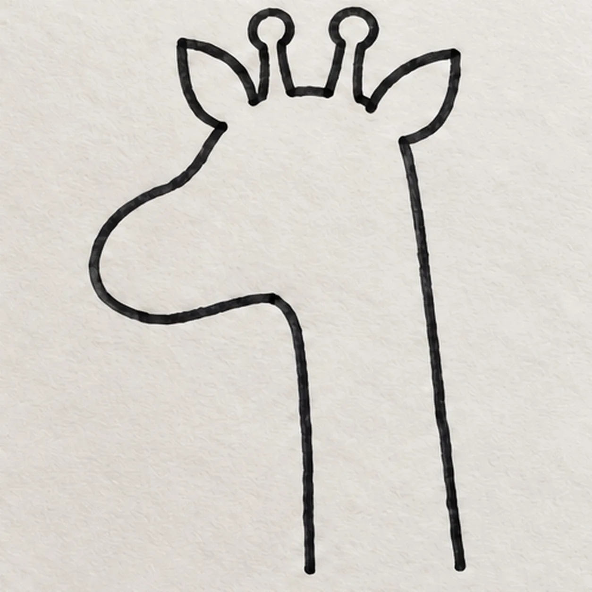
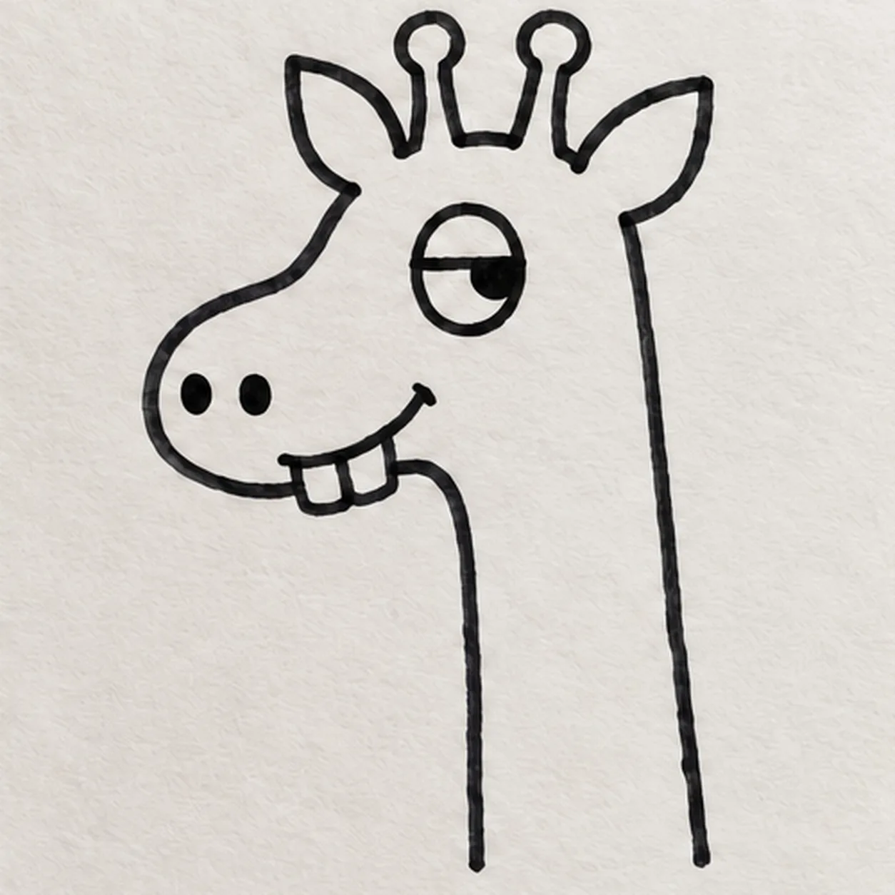
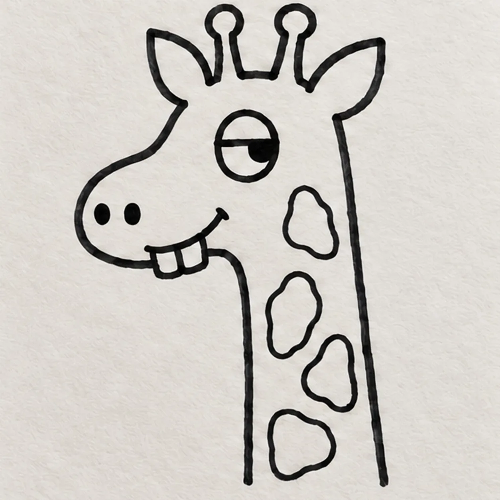
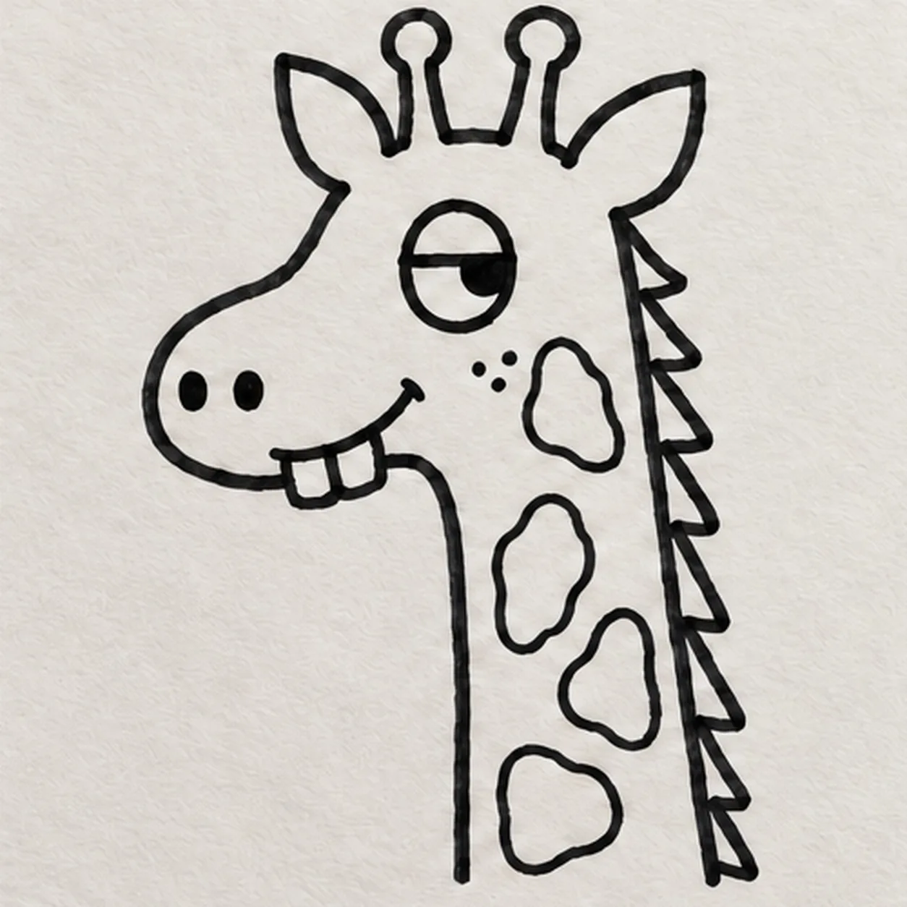

Marker ready?
Let's draw a giraffe
Treat this as one playful practice round: sketch the idea loosely, simplify the shapes, then commit with confident marker outlines and bright fills.
-
01

Shape the head and neck
With a black felt tip, draw a long upright neck that widens into a rounded head. Push one blunt muzzle to the left and join it under the chin; leave four small open gaps at the top for two ears and two ossicones.
Marker tip: Pull the two neck edges in one relaxed pass. Count four tiny breaks across the top before lifting the marker.
-
02

Attach ears and ossicones
At the four top gaps, attach two leaf-shaped ears angled outward and two short stalks tipped with round ossicones between them. Keep the muzzle and neck in place.
Marker tip: Join each ear and stalk to an open top endpoint; count two ears and two round-ended stalks.
-
03

Give it a side glance
Inside the same head, draw one large round eye with a heavy half-closed upper lid and pupil looking sideways right. Add two solid black nostrils on the muzzle and an open crooked grin showing two square teeth.
Marker tip: Set the eye first, then keep the two nostril dots separate from the toothy smile.
-
04

Place the neck spots
Draw exactly four irregular dark-edged spots down the long neck, stepping them from the jaw to the shoulder and leaving clear gaps between them.
Marker tip: Count four separate patches from top to bottom; leave yellow space between every outline.
-
05

Add mane and cheek marks
Along the back of the neck, add a short row of little triangular mane tufts. Put three cheek freckles below the eye; keep both black nostril dots unchanged.
Marker tip: Keep the freckles small and well clear of the upper patch; let the mane lean out from the back edge.
-
06

Color the giraffe
Fill the existing head and neck golden yellow, the four spots and mane warm brown, and the inner ears soft pink. Keep the same black outlines, two nostril dots, teeth and freckles.
Marker tip: Pull color strokes along the long neck and stop before they cover the small cheek freckles.